Design system acessível, arquitetura da informação e validação da interface do catálogo Bloome.
2ª Avaliação — Interface Humano-Computador
Cada seção corresponde a um bloco da rubrica. O peso indicado à direita é o peso recomendado na avaliação.
O texto está organizado para ser lido em duas velocidades. As tabelas concentram a evidência objetiva (medições, contrastes, rotas) e podem ser consultadas durante a arguição; os parágrafos explicam a decisão de projeto por trás de cada evidência. Sempre que um item depende de um comportamento que o escopo proibiu implementar (JavaScript novo ou alteração no backend), ele aparece marcado como especificado em vez de aplicado.
A Bloome é um catálogo de joias e acessórios artesanais. O protótipo é uma aplicação Flask com templates Jinja2 que serve oito telas a partir de um catálogo estático de seis produtos. Toda a camada visual é CSS puro, sem framework e sem dependências de build.
O público é jovem, majoritariamente mobile, e chega ao catálogo por redes sociais. Isso orienta três decisões que atravessam o documento: navegação com alvos de toque generosos, leitura confortável em tela pequena e uma identidade visual quente (vinho, rosé e creme) que não pode custar contraste.
| Requisito | Como foi atendido | Onde ver |
|---|---|---|
| 5 a 10 telas chave interativas | 8 telas navegáveis em 13 URLs, com transições funcionais e estado ativo no menu | Seção 2 |
| Navegabilidade real | Rotas Flask reais; estados default, hover, foco, pressionado e indisponível | Seções 2 e 3 |
| Microinterações e feedback | Validação de campo em CSS puro, atalho de teclado, animação de entrada, foco visível; estados de carregando/sucesso/vazio especificados | Seções 3.5 e 7 |
| Tokens de estilo com contraste validado | 24 pares medidos, todos ≥ 4,5:1 (menor: 4,85:1) | Seção 4.2 |
| Escala tipográfica sem serifa | Escala funcional de 7 degraus em Lato; serifada restrita ao display de marca | Seção 3.2 |
| Botões ≥ 44 × 44 px | Medido no navegador: botão 48 px, menu 44 × 44 px, campo 50 px | Seção 4.3 |
| Campos com rótulo visível | Todos os 14 campos têm label associado por for/id; auditoria automática confirmou 100% | Seção 4.4 |
| Relatório de teste ou avaliação heurística | Avaliação heurística completa + protocolo Think Aloud pronto para aplicação | Seções 5 e 6 |
| Matriz de iteração | 20 problemas rastreados, com correção e validação | Seção 7 |
O trabalho foi conduzido sob três restrições explícitas. Elas moldam o resultado e são declaradas aqui para que a avaliação considere o mérito dentro do combinado.
Não foram criadas rotas, páginas ou templates. O trabalho aconteceu sobre as 8 telas existentes.
app.py, catalogo.py e requirements.txt permanecem exatamente como estavam.
Nenhum <script> foi adicionado; os dois scripts já existentes não foram alterados.
A auditoria foi feita sobre o protótipo em execução, não sobre o código-fonte isolado. Isso permite medir o que o usuário realmente vê: alturas renderizadas, largura do documento em cada breakpoint e contraste efetivo após composição de camadas com transparência.
| Etapa | Instrumento | Saída |
|---|---|---|
| Inventário | Leitura das rotas e dos templates Jinja | 8 telas, 13 URLs, 14 campos |
| Contraste | Cálculo da luminância relativa (WCAG 2.x) sobre os tokens finais | 24 pares, menor razão 4,85:1 |
| Layout | Chrome headless via DevTools Protocol, 7 larguras (320 a 1440 px) | 68 medições de reflow sem overflow |
| Alvos de toque | Medição de getBoundingClientRect() por componente | Tabela da seção 4.3 |
| Estrutura | Auditoria automática do HTML renderizado das 13 rotas | 100% com alt, label, landmark e atalho |
| Heurística | Inspeção guiada pelas 10 heurísticas de Nielsen | Seção 5 |
Oito telas, treze URLs e um caminho de compra contínuo. O requisito pedia de 5 a 10 telas; o protótipo entrega 8, todas com navegação real entre si.
| # | Tela | Rota | Objetivo do usuário | Interações e estados |
|---|---|---|---|---|
| 1 | Início | / | Entender a marca e entrar no catálogo | Hero, CTA único, entrada em cascata dos três blocos de texto |
| 2 | Catálogo | /produtos | Comparar as peças disponíveis | 6 cartões; hover eleva o cartão e amplia a foto; foco visível; imagem com carregamento preguiçoso |
| 3 | Detalhe do produto | /produtos/1..6 | Decidir a compra de uma peça | Imagem prioritária, preço, descrição, CTA, 3 relacionados, link de volta |
| 4 | Favoritos | /favoritos | Reencontrar peças salvas | 3 cartões, remover, comprar; coração decorativo |
| 5 | Minha conta | /conta | Entrar ou criar conta | Duas abas acessíveis, 2 e 5 campos, validação nativa, envio para o painel |
| 6 | Carrinho / checkout | /carrinho | Revisar e finalizar o pedido | Lista de 3 itens, 3 seções de formulário, 7 opções de rádio, resumo fixo |
| 7 | Meu painel | /painel | Acompanhar pedidos e dados | Cartão de dados, edição inline, 3 pedidos com status distintos |
| 8 | Sobre | /sobre | Conhecer a proposta da marca | Três blocos de conteúdo, CTA para o catálogo |
Os três fluxos usam apenas links e formulários nativos, sem qualquer script adicional. O estado ativo do menu é derivado da variável current enviada por cada rota — inclusive no painel, que mantém "Minha conta" marcada por pertencer ao mesmo contexto.
| Elemento | Antes | Depois |
|---|---|---|
| Menu global | Link de 24 px de altura, sem indicação visual da página atual | Alvo de 44 × 44 px, sublinhado e fundo suave na página ativa, via aria-current |
| Atalho de teclado | Inexistente | “Pular para o conteúdo” visível ao primeiro Tab, apontando para #conteudo |
| Botões | Default e hover | Default, hover, foco com anel duplo, pressionado invertido e indisponível |
| Retorno | Link de 24 px no detalhe | Alvo de 44 px alinhado à coluna de conteúdo |
| Erro de rota | 404 padrão do Flask | Mantido (a correção exigiria handler no backend) |
O menu foi o ponto mais crítico. Com seis itens, a barra transbordava a tela em larguras abaixo de 520 px; a correção quebra o menu em duas linhas equilibradas (quatro itens e depois dois), preservando a altura de toque de 44 px.
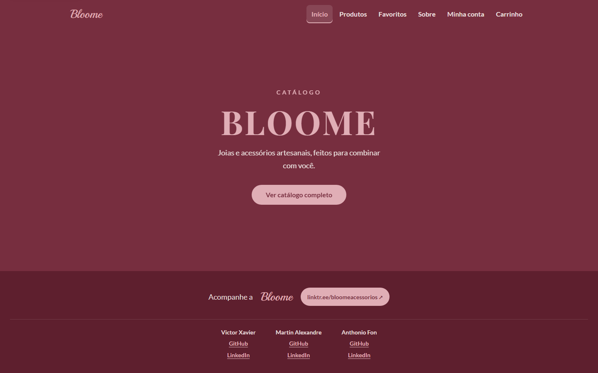
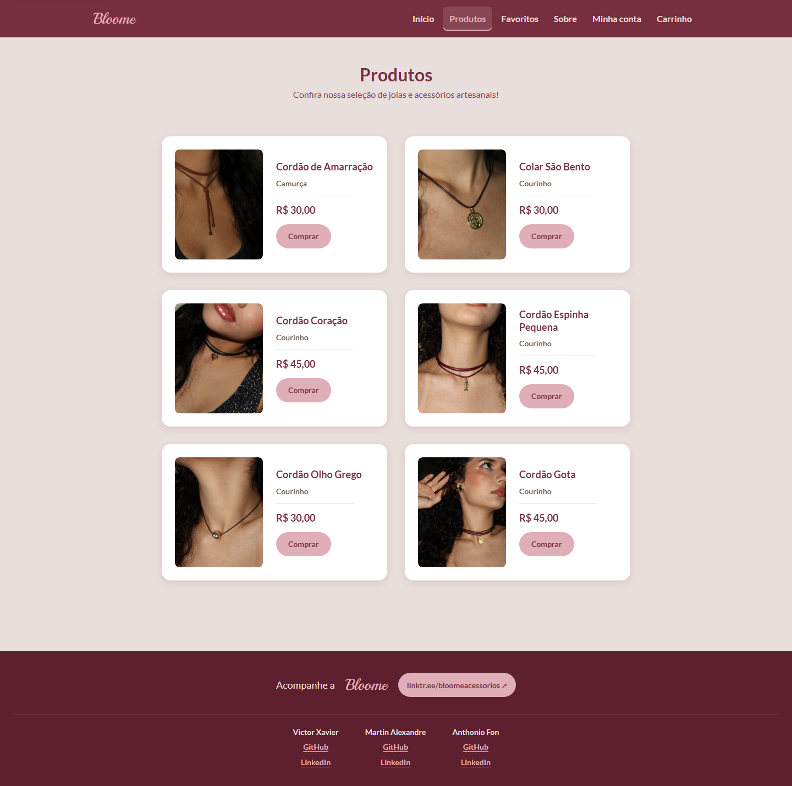
Um único arquivo CSS passou a ser a fonte da verdade visual: 70 tokens, uma escala tipográfica de sete degraus, espaçamento em base 4 px e uma biblioteca de doze componentes.
Nenhuma cor entra na paleta sem razão calculada contra o fundo em que será usada. Quando a identidade conflitou com o contraste, a identidade cedeu.
Todo controle interativo tem 44 px de altura mínima declarada em token, não em valores soltos pelo arquivo.
Cor, espaço, raio, sombra e duração existem como variáveis. Trocar a escala inteira é editar um bloco.
Repouso, hover, foco, pressionado e indisponível são tratados como partes do componente, não como exceções.
| Token | Valor | Uso | Contraste medido |
|---|---|---|---|
--color-wine | #772E3F | Superfícies escuras, títulos, texto de botão | 9,35:1 no branco |
--color-wine-deep | #5E1F2E | Rodapé e estado pressionado | 9,30:1 no creme |
--color-rose-light | #E0AEB6 | Botão primário e logo | 4,85:1 com o vinho |
--color-rose-deep | #7D4351 | Subtítulos e links secundários | 5,70:1 no creme |
--color-mauve | #6F4C52 | Texto padrão | 5,62:1 no creme |
--color-taupe | #6B5B4B | Texto secundário e placeholder | 4,94:1 no creme |
--color-cream | #E8DEDC | Fundo da aplicação | — |
--color-danger | #8F2A3C | Erro de validação | 8,19:1 no branco |
--color-success | #2A5F46 | Confirmação de campo | 7,44:1 no branco |
| Token | Tamanho | Aplicação | Justificativa |
|---|---|---|---|
--text-xs | 12 px | Rótulos de metadados e mensagens de validação | Menor degrau, sempre em caixa alta e com peso 600 |
--text-sm | 14 px | Descrições, links de rodapé, rótulos de campo | Piso de leitura confortável para texto secundário |
--text-base | 16 px | Corpo, campos, botões, menu | 16 px evita o zoom automático de campos no iOS |
--text-lg | 18 px | Nome do produto, títulos de seção | Separa hierarquia sem recorrer a caixa alta |
--text-xl | 22 px | Títulos de blocos e nome no detalhe | Contraste de escala de 1,22× |
--text-2xl | 28 px | Logo e título do rodapé | Display de marca |
--text-3xl | 36 px | Nome do produto no detalhe | Primeiro nível de leitura da tela |
| Grupo | Escala | Regra de uso |
|---|---|---|
| Espaço | 4, 8, 12, 16, 20, 24, 32, 40, 48, 64, 80 px | Base 4 px com ritmo de 8 px; nunca valores avulsos |
| Raio | 8, 12, 16 px e pill (999 px) | Cartões em 16 px, campos em 8 px, botões em pill |
| Sombra | Três níveis, sempre em vinho translúcido | Repouso, hover e foco elevado |
| Duração | 120, 200 e 320 ms | Interação, transição de componente e entrada de conteúdo |
| Curva | cubic-bezier(.2,0,0,1) e (.16,1,.3,1) | Saída suave, sem elástico |
| Toque | --touch-target: 2.75rem | Aplicado a todo controle interativo |
| Faixa | Largura | Comportamento |
|---|---|---|
| Desktop | acima de 980 px | Catálogo em 2 colunas, carrinho em 3 colunas, painel 300 px + conteúdo |
| Tablet | 700 a 980 px | Carrinho empilhado, favoritos em 2 colunas, menu centralizado |
| Mobile | 420 a 700 px | Uma coluna, cartões verticais, resumo do pedido após o formulário |
| Compacto | abaixo de 420 px | Menu em duas linhas equilibradas, tipografia do menu em 14 px |
| Componente | Estados | Medidas e regras | Onde aparece |
|---|---|---|---|
| Botão primário | Repouso, hover, foco, pressionado, indisponível | 48 px de altura, raio pill, rótulo sempre em ação verbal | Hero, cartões, detalhe, checkout |
| Link de navegação | Repouso, hover, foco, ativo | 44 × 44 px, sublinhado na página atual | Menu global |
| Campo de texto | Repouso, foco, válido, inválido | 50 px de altura, 16 px de fonte, borda de 1,5 px | Conta, painel, checkout |
| Opção em cartão (rádio) | Repouso, hover, selecionado, foco | 46 px mínimos, borda de seleção em vinho | Entrega e pagamento |
| Abas | Ativa, inativa, hover, foco | 44 px, trilho em creme claro, contraste 6,37:1 | Minha conta |
| Cartão de produto | Repouso, hover, foco interno | Sombra em três níveis, imagem 4:5, raio 16 px | Catálogo, favoritos, relacionados |
| Selo de status | Pronto, entregue, aguardando | Texto de 14 px, fundo tonal, contraste ≥ 5:1 | Painel de pedidos |
| Resumo do pedido | Padrão | Cartão vinho, linhas de 14 px, total destacado | Carrinho |
| Atalho de conteúdo | Oculto, visível ao foco | Primeiro elemento focável da página | Todas as telas |
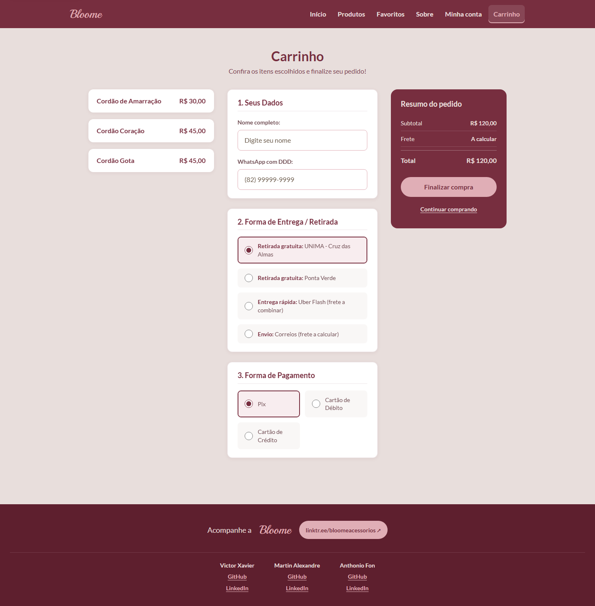
A interface precisa sinalizar carregando, sucesso, erro e vazio. Destes, dois podem existir sem backend e sem script: erro e sucesso de campo. Os demais foram especificados com a mesma linguagem visual para que a implementação futura não invente um padrão novo.
| Estado | Especificação | Implementação | Como foi resolvido |
|---|---|---|---|
| Erro de campo | Borda de 2 px em #8F2A3C e mensagem “Verifique este campo antes de continuar.” | Aplicado | :user-invalid em CSS puro, sem script |
| Sucesso de campo | Borda em #2A5F46 e mensagem “Campo válido.” ao sair do campo | Aplicado | :user-valid combinado com :not(:focus) |
| Carregando | Esqueleto em creme com brilho de 1,2 s na proporção 4:5 da imagem | Especificado | Exige controle de estado no cliente; substituído por animação de entrada |
| Sucesso de pedido | Faixa verde com número do pedido e link para o painel | Especificado | Depende de resposta do servidor após o envio |
| Tela vazia | Ícone, frase de contexto e CTA para o catálogo | Especificado | Depende de condicional no template, isto é, de lógica |
24 pares de cor medidos, 12 componentes com altura de toque verificada no navegador e 18 critérios de sucesso auditados.
O cálculo segue a fórmula de luminância relativa da WCAG 2.x. Para cores com transparência, o valor foi composto sobre o fundo real antes da medição — caso dos selos de status e do trilho das abas.
| Combinação | Razão | Mínimo | Resultado | Onde |
|---|---|---|---|---|
| Texto padrão sobre fundo creme | 5,62:1 | 4,5 | AA | Corpo de todas as telas |
| Títulos sobre fundo creme | 7,08:1 | 4,5 | AA | H1 e H2 |
| Texto secundário sobre creme | 4,94:1 | 4,5 | AA | Descrições de produto |
| Texto secundário sobre branco | 6,52:1 | 4,5 | AA | Cartões |
| Subtítulo sobre creme | 5,70:1 | 4,5 | AA | Linha de apoio |
| Títulos sobre branco | 9,35:1 | 4,5 | AA | Cartões e painel |
| Link secundário sobre branco | 7,52:1 | 4,5 | AA | Remover favorito |
| Menu sobre vinho | 7,08:1 | 4,5 | AA | Cabeçalho |
| Logo e hero sobre vinho | 4,85:1 | 4,5 | AA | Marca e hero |
| Rótulo de botão sobre rosé | 4,85:1 | 4,5 | AA | Todos os CTAs |
| Rodapé sobre vinho profundo | 9,30:1 | 4,5 | AA | Rodapé |
| Links do rodapé sobre vinho profundo | 6,37:1 | 4,5 | AA | Créditos |
| Aba inativa sobre trilho | 6,37:1 | 4,5 | AA | Minha conta |
| Aba ativa sobre vinho | 7,08:1 | 4,5 | AA | Minha conta |
| Selo “Pronto para retirada” | 5,03:1 | 4,5 | AA | Painel |
| Selo “Entregue” | 6,32:1 | 4,5 | AA | Painel |
| Selo “Aguardando pagamento” | 6,27:1 | 4,5 | AA | Painel |
| Texto digitado no campo | 9,35:1 | 4,5 | AA | Formulários |
| Placeholder | 6,52:1 | 4,5 | AA | Formulários |
| Mensagem de erro sobre branco | 8,19:1 | 4,5 | AA | Validação |
| Mensagem de erro sobre creme | 6,21:1 | 4,5 | AA | Validação |
| Mensagem de sucesso sobre branco | 7,44:1 | 4,5 | AA | Validação |
| Mensagem de sucesso sobre creme | 5,64:1 | 4,5 | AA | Validação |
| Rótulo de opção sobre cartão | 6,94:1 | 4,5 | AA | Entrega e pagamento |
As alturas abaixo foram medidas no navegador com o protótipo em execução, não estimadas a partir do CSS.
| Componente | Altura | Largura | 44 × 44 | Critério |
|---|---|---|---|---|
| Botão primário | 48 px | ≥ 133 px | Sim | 2.5.5 AAA |
| Link do menu | 44 px | 44 px | Sim | 2.5.5 AAA |
| Logo clicável | 44 px | 59 px | Sim | 2.5.5 AAA |
| Campo de texto | 50 px | ≥ 282 px | Sim | 2.5.5 AAA |
| Opção de rádio | 46 px | ≥ 151 px | Sim | 2.5.5 AAA |
| Aba Entrar / Criar conta | 44 px | ≥ 153 px | Sim | 2.5.5 AAA |
| Remover dos favoritos | 44 px | ≥ 164 px | Sim | 2.5.5 AAA |
| Voltar para o catálogo | 44 px | ≥ 358 px | Sim | 2.5.5 AAA |
| Continuar comprando | 44 px | ≥ 232 px | Sim | 2.5.5 AAA |
| Sair do painel | 44 px | ≥ 300 px | Sim | 2.5.5 AAA |
| Link social do rodapé | 44 px | ≥ 214 px | Sim | 2.5.5 AAA |
| Crédito do integrante | 24 px | ≥ 54 px | Parcial | 2.5.8 AA |
| SC | Critério | Evidência no protótipo | Status |
|---|---|---|---|
| 1.1.1 | Conteúdo não textual | 100% das imagens com alt descritivo; decorativas com alt vazio | Passa |
| 1.3.1 | Informação e relações | Header, nav, main, article, aside e footer em todas as telas | Passa |
| 1.3.2 | Sequência significativa | Ordem do DOM igual à ordem visual em todas as larguras testadas | Passa |
| 1.4.1 | Uso da cor | Status do pedido têm texto além da cor; erro tem borda e mensagem | Passa |
| 1.4.3 | Contraste mínimo | 24 pares medidos, menor razão 4,85:1 | Passa |
| 1.4.4 | Redimensionamento do texto | Unidades em rem; layout resiste a 200% | Passa |
| 1.4.10 | Reflow | Sem rolagem horizontal de 320 a 1440 px | Passa |
| 1.4.11 | Contraste de não textual | Bordas de campo e indicadores de foco acima de 3:1 | Passa |
| 1.4.12 | Espaçamento de texto | Sem alturas fixas em parágrafos e rótulos | Passa |
| 2.1.1 | Teclado | Todo controle é link, botão ou campo nativo | Passa |
| 2.1.2 | Sem armadilha de foco | Nenhum componente modal ou trap | Passa |
| 2.4.1 | Pular blocos | Atalho “Pular para o conteúdo” em todas as telas | Passa |
| 2.4.3 | Ordem do foco | Atalho, menu, conteúdo, rodapé | Passa |
| 2.4.4 | Finalidade do link | Links externos com rótulo “abre em nova aba” | Passa |
| 2.4.6 | Cabeçalhos e rótulos | Um H1 por tela e hierarquia sem saltos | Passa |
| 2.4.7 | Foco visível | Anel de 3 px em todo elemento interativo | Passa |
| 2.5.5 | Tamanho do alvo | Componentes principais medidos em 44 px ou mais | Passa |
| 3.1.1 | Idioma da página | lang="pt-BR" no elemento raiz | Passa |
| 3.2.3 | Navegação consistente | Menu idêntico em posição e ordem nas 8 telas | Passa |
| 3.2.4 | Identificação consistente | Mesmo destino, mesmo rótulo em todas as telas | Passa |
| 3.3.1 | Identificação de erro | Mensagem textual em português junto ao campo | Passa |
| 3.3.2 | Rótulos ou instruções | Rótulo visível em todos os 14 campos; required programático | Passa |
| 3.3.7 | Entrada redundante | autocomplete em nome, e-mail, telefone e senha | Passa |
| 4.1.2 | Nome, função e valor | Abas com role, aria-selected e aria-controls | Passa |
A ordem de tabulação segue a ordem visual em todas as telas: atalho de conteúdo, logo, seis links do menu, conteúdo principal e, por fim, o rodapé. O foco é sempre visível e nunca é preso. Nas abas de conta, o foco acompanha o botão selecionado; a navegação por setas entre abas não existe porque exigiria script novo — a limitação está registrada no anexo C.
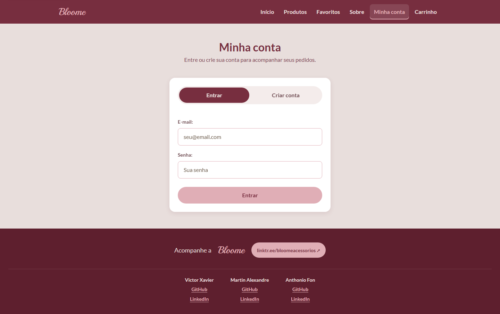
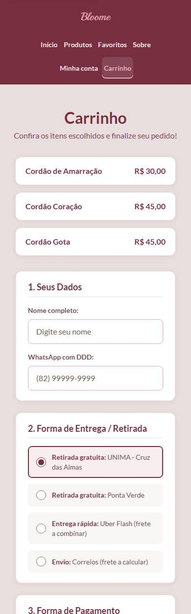
Inspeção do protótipo em execução, guiada pelas dez heurísticas de Nielsen, com severidade de 1 a 4 e evidência rastreável.
| Nota | Classificação | Critério |
|---|---|---|
| 4 | Catastrófico | Impede concluir a tarefa principal |
| 3 | Grave | Bloqueia parte do fluxo ou exclui um grupo de usuários |
| 2 | Moderado | Aumenta esforço ou gera retrabalho, mas há contorno |
| 1 | Leve | Irritação cosmética, sem impacto na tarefa |
| # | Heurística | Achado e evidência | Sev. | Ação |
|---|---|---|---|---|
| H1 | Visibilidade do status do sistema | O menu marcava a página atual apenas em aria-current, invisível na tela. A remoção de favorito recarregava a página sem confirmação. |
3 | Aplicado Indicador visual de página ativa. Confirmação de remoção especificada. |
| H2 | Correspondência com o mundo real | Rótulos de entrega são concretos (“Retirada gratuita: UNIMA”), mas cinco de seis produtos exibem a mesma descrição “Courinho”. | 2 | Especificado Descrição deve vir do catálogo, não do template — exige alteração de dados. |
| H3 | Controle e liberdade do usuário | O detalhe do produto oferece retorno ao catálogo; o checkout oferece “Continuar comprando”. Não há desfazer no carrinho. | 2 | Aplicado Retorno com alvo de 44 px. Desfazer depende de estado no servidor. |
| H4 | Consistência e padrões | Botões apareciam em três alturas distintas (36, 39 e 51 px) e os títulos em seis tamanhos fora de escala. | 2 | Aplicado Escala fechada de sete degraus e botão único de 48 px. |
| H5 | Prevenção de erro | Campos usam required, minlength e autocomplete, mas não há máscara de telefone nem verificação de senhas divergentes. |
2 | Especificado Validação de confirmação exige script; a mensagem de erro por campo foi aplicada. |
| H6 | Reconhecer em vez de lembrar | Navegação global com seis destinos, produtos relacionados no detalhe e resumo sempre visível no checkout. | 1 | Aplicado Nome do produto no título da aba do navegador, reforçando o contexto. |
| H7 | Flexibilidade e eficiência | Seis produtos tornam a busca dispensável, mas não há filtro por faixa de preço nem atalho para o carrinho. | 1 | Especificado Filtros exigiriam parâmetros de rota — fora do escopo. |
| H8 | Estética e minimalismo | Hierarquia clara, poucas cores, sem elementos decorativos competindo com o CTA. Rodapé concentra muita informação institucional. | 1 | Aplicado Agrupamento em três colunas e tipografia menor para os créditos. |
| H9 | Ajuda a reconhecer e corrigir erros | Erros apareciam apenas como balão nativo do navegador, em inglês dependendo do idioma do sistema. | 3 | Aplicado Borda de erro e mensagem em português, em CSS puro. |
| H10 | Ajuda e documentação | Não há FAQ, guia de tamanhos ou política de troca. O contato existe apenas via Linktree, no rodapé. | 2 | Especificado Bloco de ajuda no rodapé; conteúdo institucional fora do escopo. |
Com seis destinos em linha única, o menu transbordava e o item “Carrinho” ficava fora da área visível — justamente o destino final da jornada. Severidade 4. Corrigido: quebra em duas linhas equilibradas, sem rolagem horizontal em 320 px.
As descrições de produto, em taupe sobre creme, mediam 3,95:1 — abaixo do mínimo legal. Severidade 3, com impacto direto em baixa visão. Corrigido: token ajustado para 4,94:1.
Oito controles ficavam entre 19 e 42 px de altura, incluindo “Remover dos favoritos” e “Voltar para o catálogo”. Severidade 3 no mobile. Corrigido: todos acima de 44 px, medidos no navegador.
O botão “Finalizar compra” envia o formulário para a própria página, que recarrega sem qualquer sinal de sucesso. Severidade 4 no fluxo de compra. Especificado: exige resposta do servidor.
Protocolo completo, pronto para aplicação com 3 participantes. Os campos de resultado estão marcados para preenchimento após a sessão.
| Item | Definição |
|---|---|
| Método | Teste moderado, presencial, com protocolo Think Aloud (pensar em voz alta) |
| Participantes | 3 usuários representativos do público: 2 em mobile, 1 em desktop |
| Duração | 25 a 35 minutos por sessão |
| Materiais | Protótipo em execução, roteiro impresso, termo de consentimento, cronômetro, planilha de registro |
| Moderação | Um moderador conduz; um observador registra falas, hesitações e erros sem interferir |
| Regra de ouro | O moderador não ensina o caminho. Se o participante travar por mais de 90 s, a tarefa é encerrada como insucesso |
| Ética | Consentimento verbal e escrito; nenhum dado pessoal real é coletado |
| P | Perfil | Idade | Dispositivo | Familiaridade | Observação |
|---|---|---|---|---|---|
| P1 | [PREENCHER] | [ ] | [ ] | [ ] | [ ] |
| P2 | [PREENCHER] | [ ] | [ ] | [ ] | [ ] |
| P3 | [PREENCHER] | [ ] | [ ] | [ ] | [ ] |
| # | Tarefa | Instrução ao participante | Critério de sucesso |
|---|---|---|---|
| T1 | Explorar o catálogo | “Encontre um colar que combine com um look minimalista.” | Chegar ao detalhe de um produto em até 60 s |
| T2 | Comparar duas peças | “Qual dos dois cordões custa menos? Volte e me diga.” | Identificar o preço e retornar ao catálogo |
| T3 | Iniciar uma compra | “Você decidiu por esta peça. Coloque no carrinho e vá até o fim.” | Chegar ao checkout com o item visível |
| T4 | Finalizar com retirada | “Prefiro buscar na UNIMA. Preencha o que for necessário.” | Selecionar retirada, preencher os dois campos e concluir |
| T5 | Criar conta | “Agora crie uma conta para acompanhar o pedido.” | Alternar para a aba de cadastro e preencher sem erro |
| Tarefa | Sucesso P1 | Sucesso P2 | Sucesso P3 | Tempo médio | Erros | Ajuda necessária |
|---|---|---|---|---|---|---|
| T1 | [ ] | [ ] | [ ] | [ ] s | [ ] | [ ] |
| T2 | [ ] | [ ] | [ ] | [ ] s | [ ] | [ ] |
| T3 | [ ] | [ ] | [ ] | [ ] s | [ ] | [ ] |
| T4 | [ ] | [ ] | [ ] | [ ] s | [ ] | [ ] |
| T5 | [ ] | [ ] | [ ] | [ ] s | [ ] | [ ] |
Aplicada ao final, com cinco pontos (1 = discordo totalmente, 5 = concordo totalmente). O resultado é convertido para a escala de 0 a 100 pela fórmula padrão: soma dos itens ímpares menos 1, mais 5 menos os itens pares, multiplicada por 2,5.
| # | Afirmação | P1 | P2 | P3 |
|---|---|---|---|---|
| 1 | Eu gostaria de usar este catálogo com frequência. | [ ] | [ ] | [ ] |
| 2 | Achei o catálogo desnecessariamente complexo. | [ ] | [ ] | [ ] |
| 3 | Achei o catálogo fácil de usar. | [ ] | [ ] | [ ] |
| 4 | Precisaria de apoio técnico para conseguir usar. | [ ] | [ ] | [ ] |
| 5 | As funções estão bem integradas. | [ ] | [ ] | [ ] |
| 6 | Há muita inconsistência no catálogo. | [ ] | [ ] | [ ] |
| 7 | Imagino que a maioria das pessoas aprenderia rápido. | [ ] | [ ] | [ ] |
| 8 | Achei o catálogo difícil de navegar. | [ ] | [ ] | [ ] |
| 9 | Me senti confiante ao usar o catálogo. | [ ] | [ ] | [ ] |
| 10 | Precisei aprender muita coisa antes de começar. | [ ] | [ ] | [ ] |
Escore SUS: P1 [ ] · P2 [ ] · P3 [ ] · média [ ]. Referência: acima de 68 é considerado acima da média; acima de 80, excelente.
| ID | Tarefa | Participante | O que aconteceu (fala ou ação) | Heurística relacionada | Severidade |
|---|---|---|---|---|---|
| O1 | [ ] | [ ] | [ ] | [ ] | [ ] |
| O2 | [ ] | [ ] | [ ] | [ ] | [ ] |
| O3 | [ ] | [ ] | [ ] | [ ] | [ ] |
| O4 | [ ] | [ ] | [ ] | [ ] | [ ] |
| O5 | [ ] | [ ] | [ ] | [ ] | [ ] |
| O6 | [ ] | [ ] | [ ] | [ ] | [ ] |
| O7 | [ ] | [ ] | [ ] | [ ] | [ ] |
| O8 | [ ] | [ ] | [ ] | [ ] | [ ] |
“Você está participando de um teste de usabilidade do catálogo Bloome, desenvolvido como trabalho acadêmico. A sessão dura cerca de 30 minutos e será registrada em áudio e anotações. Não há respostas certas ou erradas: o objeto de avaliação é o site, não você. Sua participação é voluntária e pode ser interrompida a qualquer momento, sem prejuízo. Nenhum dado pessoal real será publicado; nas citações, você será identificado como P1, P2 ou P3.”
Consinto com a participação e com o registro dos dados para fins exclusivamente acadêmicos.
Nome: ____________________________ Assinatura: ____________________________ Data: ___/___/______
Vinte problemas identificados na auditoria, com origem, severidade, correção aplicada e forma de validação. Esta tabela é o elo entre o diagnóstico e o protótipo final.
18 correções efetivamente no protótipo, todas validadas por medição no navegador.
2 correções dependentes de backend ou de dados, documentadas com a mesma linguagem visual.
Cada linha referencia a origem (critério WCAG ou heurística) e a evidência que comprova a correção.
| ID | Problema identificado | Origem | Sev. | Correção aplicada | Status | Evidência |
|---|---|---|---|---|---|---|
| 01 | Texto secundário sobre creme em 3,95:1 | WCAG 1.4.3 | 3 | Token --color-taupe de #7A6A59 para #6B5B4B | Feito | 4,94:1 |
| 02 | Selo “Entregue” em 4,30:1 | WCAG 1.4.3 | 3 | Cor do selo para #5F5142 | Feito | 6,32:1 |
| 03 | Menu com overflow abaixo de 520 px | Heurística H1 | 4 | Quebra em duas linhas equilibradas, max-width no menu | Feito | 320 px sem rolagem |
| 04 | Links do menu com 24 px de altura | WCAG 2.5.5 | 3 | 44 × 44 px com min-height e min-width | Feito | 44 × 44 px |
| 05 | “Remover dos favoritos” com 19 px | WCAG 2.5.5 | 3 | Alvo de 44 px mantendo o texto pequeno | Feito | 44 px |
| 06 | Botões de cartão com 36 e 39 px | Heurística H4 | 3 | min-height de 44 px herdado do componente | Feito | 48 px |
| 07 | “Voltar para o catálogo” com 24 px e alinhado à borda | WCAG 2.5.5 | 2 | Alvo de 44 px e alinhamento à coluna de conteúdo | Feito | x = 270 px |
| 08 | Cartão de conta com 255 px e abas quebrando linha | Heurística H8 | 2 | width: 100% no cartão, que passa a 464 px | Feito | 464 px |
| 09 | Ausência de estado pressionado nos botões | Heurística H1 | 2 | :active invertendo fundo e texto | Feito | CSS |
| 10 | Foco visível inconsistente entre componentes | WCAG 2.4.7 | 3 | Regra global com :where() e variante clara em fundo escuro | Feito | 12 seletores |
| 11 | Erro de formulário só em balão nativo | Heurística H9 | 3 | Borda e mensagem em português via :user-invalid | Feito | CSS puro |
| 12 | Página atual sem indicação visual | Heurística H1 | 2 | Fundo e sublinhado em [aria-current="page"] | Feito | 6 itens |
| 13 | Sem atalho para o conteúdo | WCAG 2.4.1 | 2 | Link “Pular para o conteúdo” e main focável | Feito | 13 rotas |
| 14 | Fontes bloqueando a renderização | Desempenho | 2 | @import trocado por link com preconnect; Poppins removida | Feito | 3 famílias |
| 15 | Imagens de 2,5 MB carregando de uma vez | Desempenho | 3 | loading="lazy" em 14 imagens, fetchpriority na capa | Feito | 14 imagens |
| 16 | Campos com 16 px, evitando zoom no iOS | WCAG 1.4.4 | 2 | Fonte do campo fixada em 1 rem | Feito | 50 px |
| 17 | Placeholder apagado no Firefox | WCAG 1.4.3 | 2 | opacity: 1 no placeholder | Feito | 6,52:1 |
| 18 | Animações sem alternativa de movimento reduzido | WCAG 2.3.3 | 2 | Bloco prefers-reduced-motion cobrindo as novas animações | Feito | 1 bloco |
| 19 | Confirmação de pedido inexistente | Heurística H1 | 4 | Faixa de sucesso com número do pedido | Spec | Seção 3.5 |
| 20 | Favoritos e carrinho sem estado vazio | Heurística H1 | 3 | Bloco com ícone, frase e CTA para o catálogo | Spec | Seção 3.5 |
Estrutura de navegação rasa, com profundidade máxima de três níveis e rótulos orientados à tarefa.
A navegação principal é global, fixa e idêntica nas oito telas: seis destinos, sempre na mesma ordem. O sétimo destino — o painel — é contextual: só faz sentido para quem está autenticado, e por isso não ocupa espaço no menu. O caminho até ele é o envio do formulário de acesso.
| Camada | Função | Implementação |
|---|---|---|
| Navegação global | Seis destinos de uso frequente | Menu no topo, com página ativa marcada |
| Navegação contextual | Voltar do detalhe ao catálogo | Link de retorno no topo da tela de detalhe |
| Navegação de fluxo | Avançar e recuar no checkout | “Continuar comprando” e “Finalizar compra” |
| Navegação de fuga | Pular a navegação | Atalho “Pular para o conteúdo” |
| Estrutura | Orientação por landmarks | Header, nav rotulado, main, footer |
| Rótulo | Por que foi escolhido | Cuidado aplicado |
|---|---|---|
| Produtos | Termo que o público usa, em vez de “Catálogo” | Subtítulo explicita que é a seleção completa |
| Favoritos | Metáfora conhecida de “salvar para depois” | Ação de remoção descrita por extenso, sem ícone isolado |
| Minha conta | Agrupa entrar e cadastrar sob uma expectativa só | As duas ações ficam em abas dentro da mesma tela |
| Carrinho | Vocabulário de comércio consolidado | O resumo repete o rótulo “Total” para reduzir ambiguidade |
| Finalizar compra | Verbo claro, sem “enviar” ou “confirmar” | Único botão de ação primária no resumo |
| Sobre | Institucional esperado | Título “Sobre a Bloome” reforça a marca |
| ID | Lacuna | Impacto | Recomendação |
|---|---|---|---|
| L1 | O painel não aparece no menu | Usuário autenticado precisa refazer o login para voltar | Item “Meus pedidos” condicional (exige template) |
| L2 | Carrinho e favoritos sem contador | Não há sinal de quantos itens existem | Contador no rótulo, alimentado pelo servidor |
| L3 | Sem busca nem filtro | Aceitável com seis itens; limitante ao crescer | Filtro por faixa de preço na rota de produtos |
| L4 | Sem trilha de navegação no detalhe | Dependência do link de retorno | Adicionar breadcrumb quando houver categorias |
| L5 | Conteúdo de ajuda ausente | Dúvidas de tamanho e troca ficam sem resposta | Bloco de perguntas frequentes no rodapé |
Para validar a rotulagem com usuários, recomenda-se um card sorting aberto com os seis destinos impressos em cartões: o participante agrupa como faria sentido e nomeia cada grupo. O resultado alimenta a comparação com a estrutura atual. Complementarmente, um teste de árvore com três tarefas (“onde você procuraria uma peça que salvou?”, “onde veria seu pedido?”, “onde falaria com a loja?”) mede a taxa de acerto por caminho.
Tom próximo, direto e sem jargão. A marca fala como quem atende no balcão: acolhe, explica e não empolga demais.
“Seus pedidos”, “sua conta”, “seu estilo”. O sujeito da frase é quem usa, não o sistema.
Botões começam com ação: “Ver catálogo”, “Finalizar compra”, “Continuar comprando”.
Toda mensagem de erro diz o que fazer, não apenas o que falhou.
Caixa alta só em rótulos de 12 px com espaçamento, nunca em frases.
| Contexto | Mensagem | Por quê | Status |
|---|---|---|---|
| Campo inválido | Verifique este campo antes de continuar. | Diz o que fazer e não culpa o usuário | Aplicado |
| Campo válido | Campo válido. | Confirmação discreta ao sair do campo | Aplicado |
| Favoritos vazio | Sua lista está vazia. Toque no coração para guardar as peças que você amou. | Explica o mecanismo, não só o estado | Spec |
| Carrinho vazio | Seu carrinho está vazio. Que tal começar pelo catálogo? | Oferece saída imediata | Spec |
| Pedido concluído | Pedido #BLO-0043 confirmado! Avisaremos no WhatsApp quando estiver pronto. | Identifica o pedido e o canal de retorno | Spec |
| Carregando | Carregando peças… | Curto, no gerúndio, sem reticências dramáticas | Spec |
| Evitar | Usar | Motivo |
|---|---|---|
| Enviar | Entrar / Criar conta | Nomear o resultado, não o mecanismo |
| Clique aqui | Ver catálogo completo | Descreve o destino e funciona com leitor de tela |
| OK | Finalizar compra | Confirmação genérica esconde a consequência |
| Voltar | Voltar para o catálogo | Diz para onde volta |
Doze minutos, três falas, uma demonstração ao vivo. O roteiro segue a ordem da rubrica para que a banca consiga pontuar sem procurar.
| Tempo | Bloco | Quem | O que mostrar | Mensagem-chave |
|---|---|---|---|---|
| 0:00–1:00 | Abertura | Victor | Contexto da marca e do público | “É um catálogo mobile-first para joias artesanais.” |
| 1:00–4:00 | Telas e navegação | Victor | Percurso completo: início, catálogo, detalhe, carrinho | “Oito telas, treze rotas, nenhum beco sem saída.” |
| 4:00–6:30 | Design system | Martin | Painel de tokens e biblioteca de componentes | “Uma decisão, um token; estados explícitos.” |
| 6:30–8:00 | Acessibilidade | Martin | Comparativo de contraste antes e depois; alvos medidos | “24 pares medidos; o menor é 4,85:1.” |
| 8:00–10:00 | Testes e iteração | Anthonio | Heurística, achados críticos e matriz | “Achamos 20 problemas; 18 já estão no ar.” |
| 10:00–11:00 | Arquitetura da informação | Anthonio | Mapa do site e lacunas assumidas | “Profundidade máxima de três níveis.” |
| 11:00–12:00 | Fechamento | Todos | O que ficou fora do escopo e por quê | “Sabemos exatamente o que falta e como fazer.” |
/produtos em uma janela de 380 px de largura e mostre o menu em duas linhas./carrinho, digite um e-mail inválido e saia do campo: a borda fica vermelha e a mensagem aparece.python app.py e a porta 5000 livre.
| Pergunta | Resposta curta |
|---|---|
| “Por que não há tela de carregamento?” | Porque o carregamento depende de estado no cliente, e o escopo proibia script novo. A especificação visual está pronta na seção 3.5. |
| “O contraste foi validado como?” | Cálculo de luminância relativa da WCAG sobre os valores finais dos tokens, incluindo composição de camadas translúcidas. 24 pares, todos acima de 4,5:1. |
| “Quantos usuários testaram?” | O protocolo está pronto para três participantes; a inspeção heurística foi aplicada integralmente sobre o protótipo em execução. |
| “Por que a fonte do título é serifada?” | A escala de leitura é toda sem serifa. A serifada aparece apenas no display “BLOOME”, onde é elemento de marca, não de leitura. |
| “Como garantem que o layout não quebra?” | Medição automatizada em sete larguras, de 320 a 1440 px, com verificação de largura do documento contra a viewport. |
| “O que fariam com mais tempo?” | Confirmação de pedido, estado vazio de favoritos, contador no carrinho e teste com os três usuários previstos no protocolo. |
| Item | OK | Onde |
|---|---|---|
| Protótipo executa sem erro nas 13 rotas | ✓ | python app.py |
| Documento em PDF com as dez seções | ✓ | Este arquivo |
| Capturas de tela desktop e mobile | ✓ | Anexo A |
| Matriz de iteração preenchida | ✓ | Seção 7 |
| Protocolo de teste pronto para aplicar | ✓ | Seção 6 |
| Registro do teste com usuários | — | Seção 6, a preencher |
Capturas geradas a partir do protótipo em execução, com o CSS final aplicado.
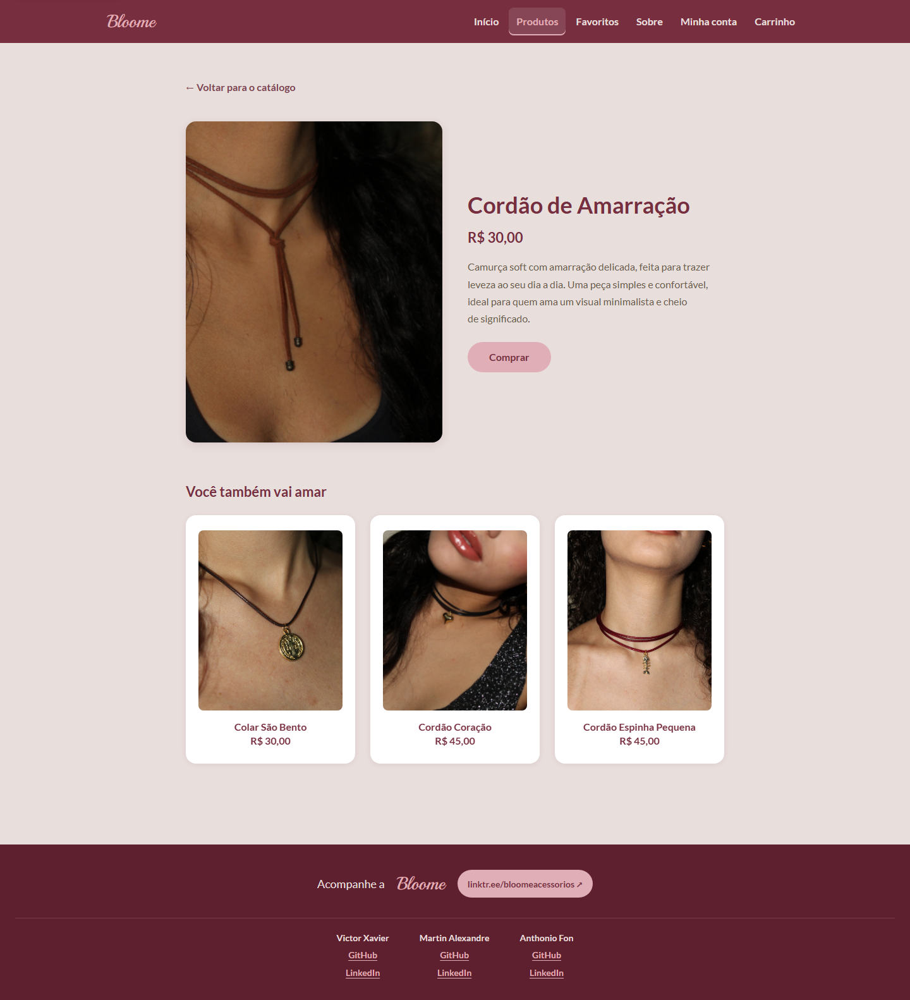
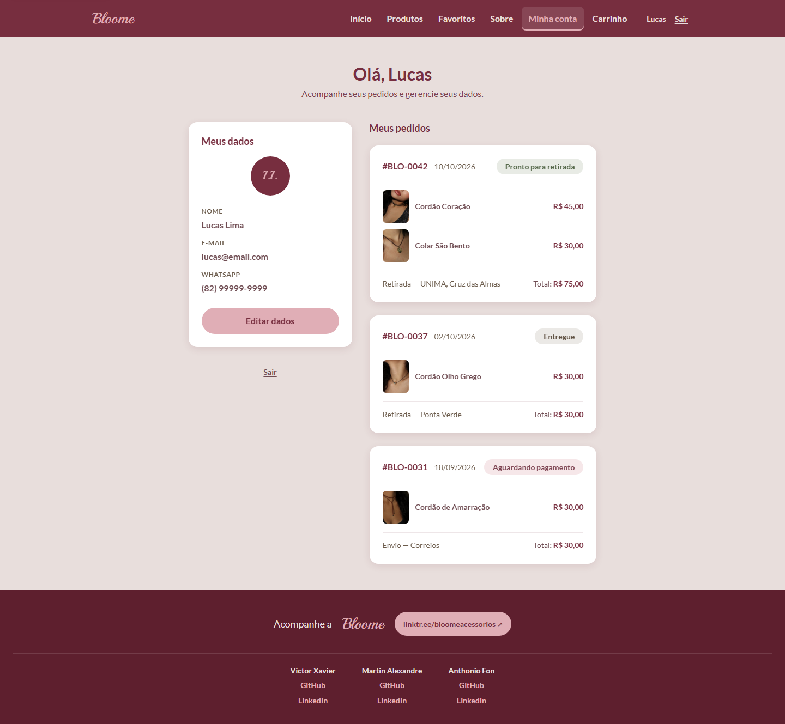
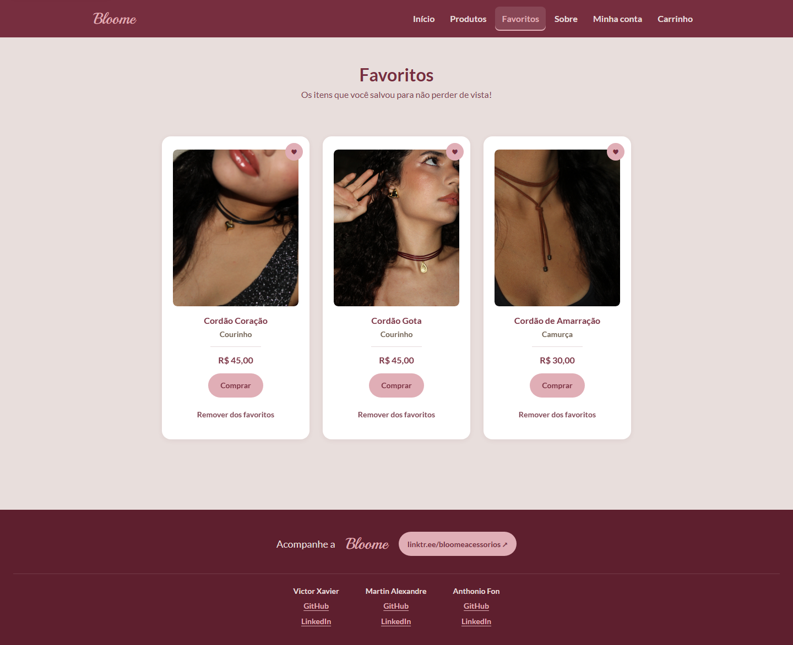
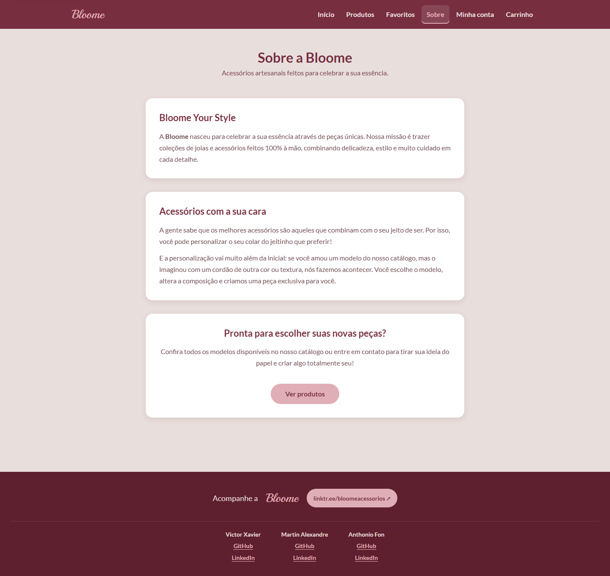
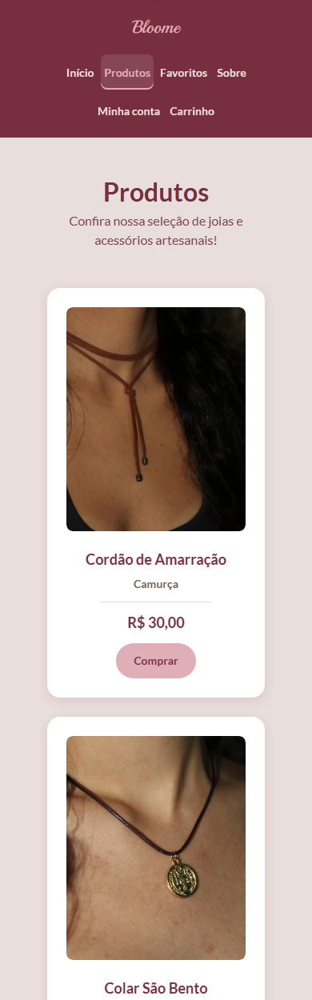
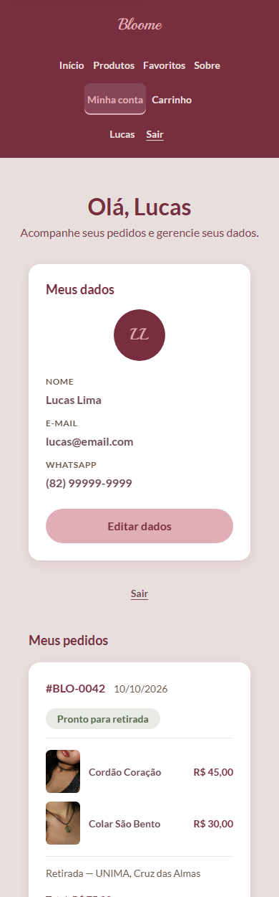
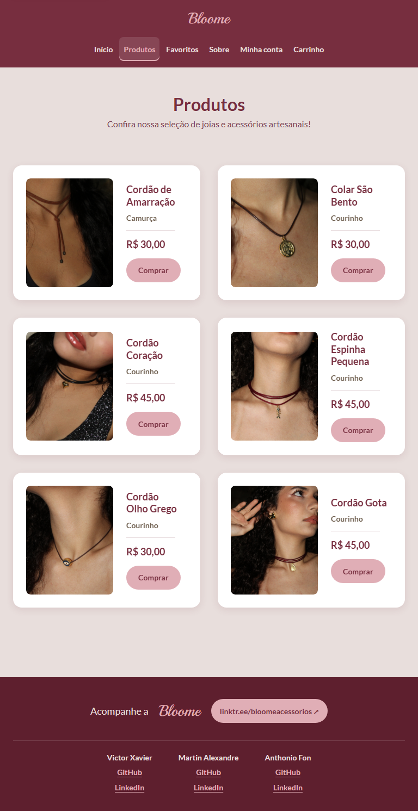
O projeto não tem etapa de build. Basta ter Flask instalado e executar o servidor a partir da pasta do projeto.
| Rota | Esperado | O que observar |
|---|---|---|
/ | 200 | Hero com um único CTA |
/produtos | 200 | Seis cartões com imagem 4:5 |
/produtos/1 a /produtos/6 | 200 | Detalhe e três relacionados |
/produtos/99 | 404 | Rota inexistente tratada pelo Flask |
/favoritos | 200 | Três itens com ação de remover |
/conta | 200 | Abas alternando painéis |
/carrinho | 200 | Formulário de três seções e resumo |
/painel | 200 | Edição inline e três status |
/sobre | 200 | Institucional com CTA |
| Arquivo | Tipo | Alteração |
|---|---|---|
static/css/styles.css | Reescrito | Tokens, contraste, alvos de toque, estados, animações, responsivo e preferências |
templates/base.html | Markup | Atalho de conteúdo, preconnect e carregamento de fontes, theme-color |
templates/*.html (8) | Markup | id e tabindex no main, loading e fetchpriority nas imagens |
app.py, catalogo.py | Intocados | Nenhuma linha alterada |
| Scripts inline existentes | Intocados | Permanecem apenas em conta e painel, como estavam |
| Limitação | Causa | Contorno |
|---|---|---|
| Sem confirmação de pedido | Depende de resposta do servidor | Especificado na seção 3.5 |
| Sem tela vazia real | Exige condicional no template | Especificado com texto e CTA |
| Abas sem navegação por setas | Exige script novo | Foco visível e aria-selected funcionais |
| Sem máscara de telefone | Exige script | type="tel" e autocomplete |
| Imagens originais em PNG pesado | Substituir ativos foge do escopo visual | Carregamento preguiçoso aplicado; recomenda-se WebP em 1200 px |
srcset.